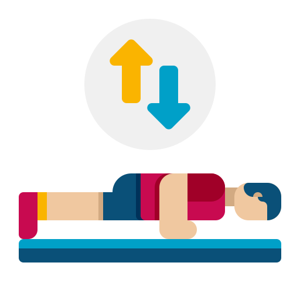
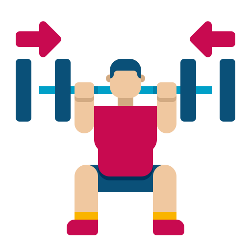
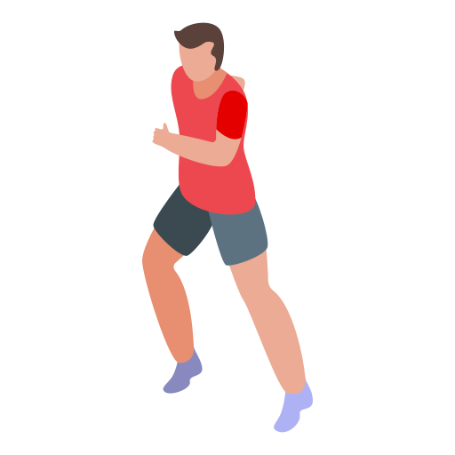

Hey, I'm Linson
I’m a polymath!
Yeah, I’m pround of a lot of things and recently I realize that coding was one of them.
Between passions I don’t know and those that are out of my reach for now, I just keep going...
Who Am I?
Know yourself, and you will know the Universe ~Socrate~
Pompes

2000
12%
Moyenne de pompes effectués
Squats

420
12%
Moyenne de squats effectués
Course

1.5km
12%
Moyenne de course effectuée